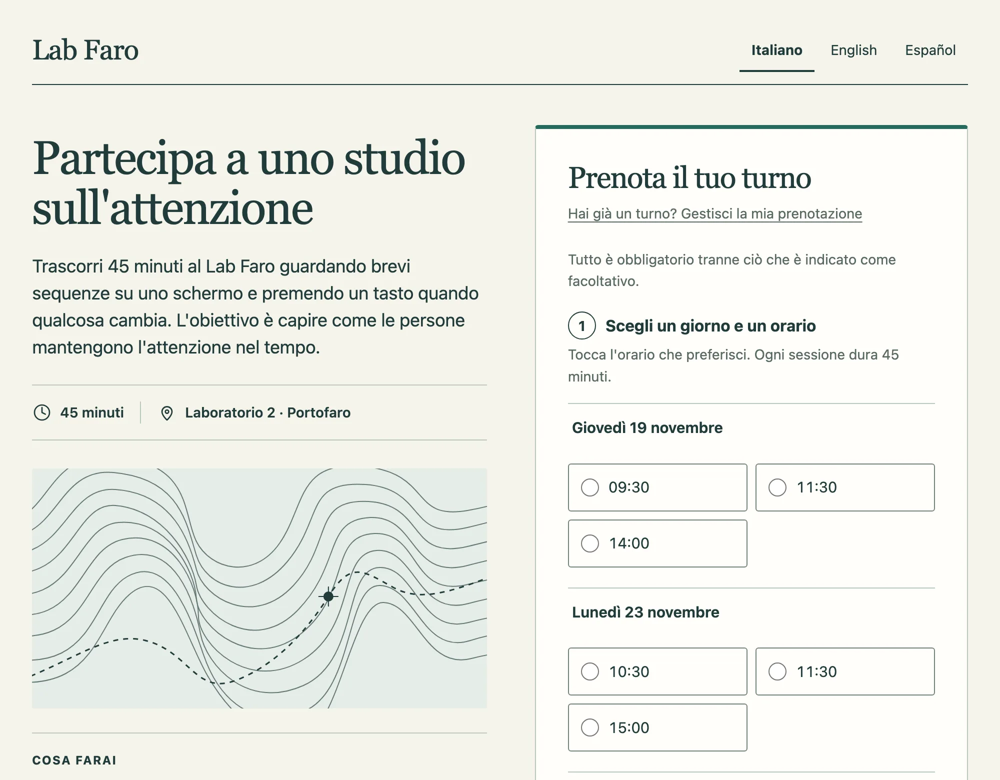

Cinque sezioni, un pannello
Agenda, Studi, Contatti, Dati e Impostazioni. Il pannello funziona anche senza JavaScript.
Gratuito · Open source · Con attribuzione
Una pagina pubblica per chi partecipa. Un pannello privato per il laboratorio. Sessioni di qualsiasi durata, con gli orari di inizio che scegli tu.
Sul piano gratuito di Cloudflare. Un solo file da configurare.

01 / I tempi del laboratorio
Una sessione può durare 50 minuti con gli inizi a 60 minuti l’uno dall’altro, per esempio alle 10:00, alle 11:00 e alle 12:00. Restano 10 minuti tra una sessione e l’altra. Gli orari di inizio li scegli tu.
Scegli gli orari di inizio. Approdo tiene libero l’intervallo tra una sessione e l’altra.
Tutti gli orari, in site.config.js: sessionMinutes: 50, slotMinutes: 60, defaultTimes: ["10:00", "11:00", "12:00"].
02 / Dentro Approdo
Chi partecipa sceglie un giorno e un turno. Il laboratorio apre le giornate, segna le presenze e segue lo studio. Queste sono schermate vere, con un laboratorio inventato. Puoi aprire ogni immagine a dimensione intera.

Agenda, Studi, Contatti, Dati e Impostazioni. Il pannello funziona anche senza JavaScript.
Pagine pubbliche in italiano, inglese e spagnolo, quante ne offri. Il pannello è in italiano o spagnolo, a scelta in site.config.js.
Due suite di test girano su GitHub Actions a ogni push. Il Worker non ha dipendenze in esecuzione.

Testi, dichiarazioni e obiettivo di partecipanti si gestiscono insieme nella sezione Studi.

Tre esportazioni. Ognuna indica se contiene dati personali, prima di scaricarla.
Senza e-mail, la prenotazione è confermata subito sullo schermo, con un file per il calendario. Conferme e promemoria via e-mail sono facoltativi: li invia un piccolo Apps Script da un account Gmail dedicato allo studio. Con le e-mail attive, chi prenota deve confermare via e-mail entro due ore, altrimenti il posto torna libero.


03 / Prepara il laboratorio
site.config.js.Un Worker Cloudflare e un database D1, sul piano gratuito. Il Worker crea e aggiorna le proprie tabelle.
Servono un account GitHub e un account Cloudflare gratuito. Il modulo mostra più campi: compila solo ADMIN_PASSWORD, una password di almeno 16 caratteri (va bene una frase lunga), e lascia gli altri come sono. Non modificare il comando di deploy.
site.config.jsNel nuovo repository che il pulsante ha creato nel tuo GitHub, apri site.config.js. Sostituisci i dati di esempio: laboratorio, luogo e dettagli dello studio. Poi fai commit. Cloudflare pubblica di nuovo in uno o due minuti. Finché restano gli esempi, il sito dice che non è configurato e non accetta prenotazioni.
Accedi a /admin. Apri i giorni e gli orari che vuoi offrire, poi condividi l’indirizzo pubblico.
Se il modulo non funziona sul tuo account, usa una delle altre due strade. Se il pulsante non funziona sul tuo account, il repository descrive anche l’installazione con un agente di programmazione e quella da terminale (da terminale il database nasce nell’UE).
04 / Privacy per chi partecipa
Le prenotazioni vengono cancellate 30 giorni dopo la sessione (è il valore di base, puoi cambiarlo). Restano solo conteggi settimanali senza nomi.
Al massimo 20 richieste ogni 10 minuti da ciascuna rete. Per questo limite si conserva per un’ora un codice derivato dall’indirizzo di rete; l’indirizzo stesso no.
Le nuove prenotazioni si sospendono quando il sito ha inviato 80 e-mail in 24 ore. Turnstile è facoltativo; se lo attivi, chi prenota ha bisogno di JavaScript.
I conteggi settimanali non hanno nomi. In uno studio piccolo, chi conosce i partecipanti potrebbe comunque collegare un conteggio a una persona.
Leggi quali dati conserva il prodotto05 / In uso
Ogni installazione invia un conteggio giornaliero anonimo, attivo di base. Puoi disattivarlo per il tuo laboratorio. Il codice del contatore è nel repository.
Il conteggio è partito a novembre 2026. I totali compaiono qui quando le installazioni hanno inviato il conteggio in due giorni diversi. Come funziona il conteggio.
Un identificatore casuale dell’installazione, la versione e il numero di sessioni segnate come svolte. Nessun nome, indirizzo e-mail, nome del laboratorio o indirizzo del sito.
Un’installazione è attiva se il pannello è stato aperto negli ultimi 30 giorni. È contata dal secondo giorno in cui invia.
Puoi disattivarlo con una riga: usageCount: false.
06 / Prima di installare
Approdo ha bisogno di un server e di un database, quindi non funziona su GitHub Pages. Il pulsante di installazione non garantisce un database nell’UE. Se serve la giurisdizione UE, usa lo script di configurazione con --jurisdiction eu, come descritto nel repository.
I testi della privacy e del consenso sono un punto di partenza. Adattali al tuo studio e falli rivedere dal responsabile della protezione dei dati della tua istituzione e dal comitato etico.
Un normale account Gmail invia circa 100 e-mail al giorno. Le nuove prenotazioni si sospendono quando il sito ha inviato 80 e-mail in 24 ore. Può preparare gli inviti per studi futuri, ma non li invia da solo.
Non ci sono account separati o permessi individuali. Il laboratorio condivide una sola password per il pannello.
Un progetto indipendente e open source
Sviluppa app per il web e per il Mac e strumenti per gli agenti di programmazione.
Approdo è gratuito e open source. La sua licenza, la Attribution Assurance License con una condizione aggiunta, chiede due cose: la riga «Fatto con Approdo di nerln» resta visibile in fondo alle tue pagine di prenotazione, e uno studio che ha usato Approdo lo cita.
Se Approdo è utile al tuo laboratorio, metti una stella al repository o parlane a un collega che conduce studi.